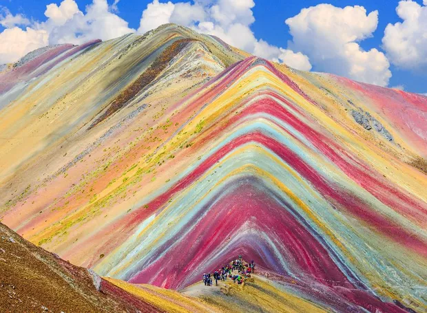
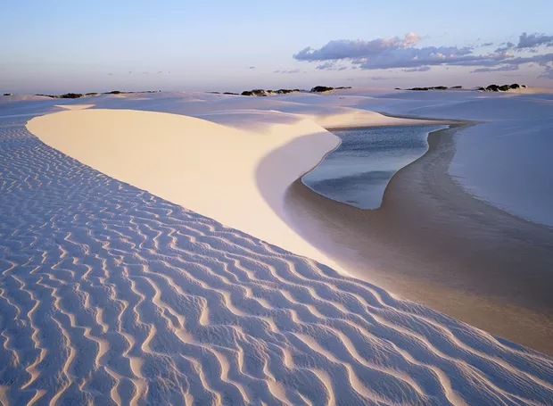
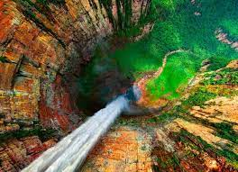
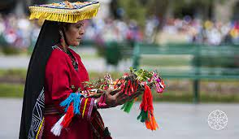
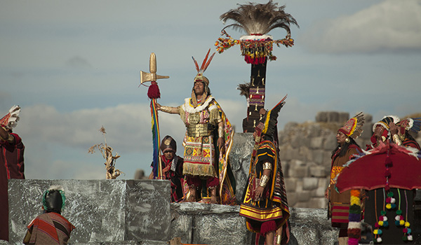
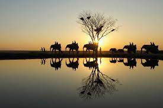
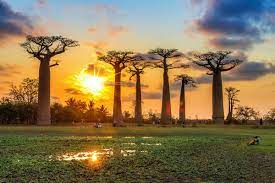
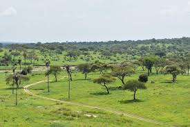
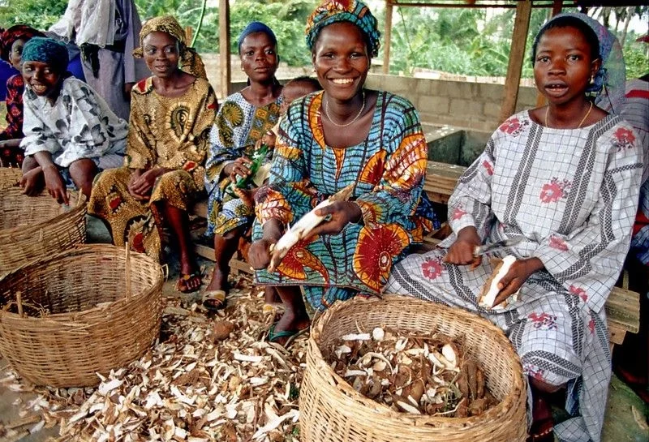
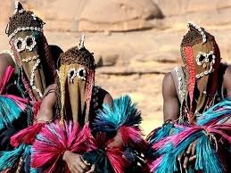

COMPARAÇÃO DE CONTINENTES AMÉRICA DO SUL E ÁFRICA
AQUELES QUE COMPARTILHAM MAIS QUE CULTURA
Ambos os continentes desempenham papéis significativos no cenário global, tanto em termos de recursos
naturais quanto de contribuições para a história e a cultura mundial.
AMÉRICA



ASPECTOS NATURAIS🌿
A América do Sul é marcada pela diversidade natural, destacando-se pela Cordilheira dos Andes,
a maior cadeia de montanhas do mundo, e pela região amazônica, a maior floresta tropical do planeta. A
presença de planícies como o Pantanal e o Pampas, além das costas banhadas pelo Atlântico e pelo Pacífico,
oferece uma ampla variedade de ecossistemas, tornando-a um destino atrativo para amantes da natureza e
ecoturistas.
CULTURA🎎
A cultura da América do Sul é diversa e rica, influenciada por povos indígenas, colonizadores
europeus e migrações. Música, dança, culinária, arte e religião refletem essa diversidade. Destacam-se o
samba e o tango na música, o Carnaval do Brasil, pratos como feijoada e ceviche, e uma arte que vai das
civilizações pré-colombianas aos movimentos contemporâneos. A religião combina crenças indígenas,
catolicismo e outras influências. Em síntese, a cultura sul-americana é uma mistura vibrante de tradições e
expressões criativas.


PRINCIPAIS PAISES E SUA POPULAÇÃO👥
Os principais países da América do Sul, em termos de população, são:
Brasil: Com uma população de aproximadamente 211 milhões de pessoas, o Brasil é o país mais populoso da América
do Sul e o quinto do mundo.
Colômbia: Com cerca de 51 milhões de habitantes, a Colômbia é o segundo país mais populoso da América do Sul.
Argentina: Com uma população de cerca de 45 milhões de pessoas, a Argentina é o terceiro país mais populoso da
região.
Peru: Com aproximadamente 33 milhões de habitantes, o Peru é o quarto país mais populoso da América do Sul
.
Venezuela: Com uma população de cerca de 28 milhões de pessoas, a Venezuela é o quinto país mais populoso da
região.
Outros países da América do Sul incluem Chile, Equador, Bolívia, Paraguai, Uruguai, Guiana, Suriname e Guiana
Francesa, com populações variando de algumas centenas de milhares a vários milhões.
ÁFRICA



ASPECTOS NATURAIS🍂
A África é um continente diverso, com savanas, florestas tropicais, desertos, montanhas e
planícies. Seus principais rios, como o Nilo, o Congo e o Zambeze, são vitais para a vida e a economia
local. A região abriga uma rica biodiversidade, incluindo elefantes, leões, rinocerontes, girafas e uma
variedade de aves e animais aquáticos. No entanto, a pressão humana, incluindo a degradação do habitat, a
caça furtiva e as mudanças climáticas, ameaçam a sobrevivência dessas espécies e ecossistemas.
CULTURA🎶
cultura africana é diversa e enraizada em tradições antigas, refletindo uma rica variedade de
línguas, músicas, danças e arte. Com rituais, mitologia e crenças espirituais profundas, ela expressa uma
forte conexão com a natureza e a comunidade. A música, desde ritmos tribais até afrobeat moderno, desempenha
um papel central, assim como a arte, com esculturas, máscaras e pinturas simbólicas. A culinária africana é
variada, utilizando ingredientes locais e especiarias, refletindo a herança cultural de cada região. Apesar
das influências externas, a cultura africana mantém sua autenticidade e vitalidade, adaptando-se ao longo do
tempo.


PRINCIPAIS PAISES E SUA POPULAÇÃO👥
Os principais países da África em termos de população são:
Nigéria - Com uma população estimada em mais de 200 milhões de habitantes, é o país mais populoso da África e o
sétimo mais populoso do mundo.
Etiópia - Com mais de 115 milhões de habitantes, é o segundo país mais populoso da África.
Egito - Com uma população de mais de 100 milhões de habitantes, o Egito é o terceiro país mais populoso da
África.
República Democrática do Congo - Com mais de 90 milhões de habitantes, é o quarto país mais populoso da África.
Tanzânia - Com mais de 60 milhões de habitantes, é o quinto país mais populoso da África.
Esses são apenas alguns exemplos dos países mais populosos da África, mas o continente abriga uma grande
diversidade de nações, cada uma com sua própria população única e características culturais.
SEMELHANÇAS ENTRE ESSES DOIS CONTINENTES
Há várias semelhanças entre a África e a América do Sul em diferentes aspectos:
1. Aspectos naturais:
Ambos os continentes apresentam uma diversidade impressionante de ecossistemas, incluindo florestas tropicais,
desertos, montanhas, planícies e litorais variados.
Ambos têm importantes bacias hidrográficas, com rios de grande porte, como o Amazonas na América do Sul e o Nilo
na África.
Compartilham características geológicas, como a presença de cordilheiras, como os Andes na América do Sul e a
Cordilheira do Rift na África Oriental.
2. Aspectos populacionais:
Ambos os continentes têm populações étnica e culturalmente diversas, com uma riqueza de grupos étnicos, línguas
e tradições.
Tanto na África quanto na América do Sul, existem áreas densamente povoadas, como as regiões costeiras, e áreas
menos povoadas, como desertos e florestas remotas.
3. Aspectos culturais:
Compartilham uma rica herança cultural, incluindo arte, música, dança, mitologia e práticas espirituais únicas
em cada região.
Ambos têm uma história marcada pela influência de povos indígenas, bem como por períodos coloniais e movimentos
de independência.
4. Aspectos socioeconômicos:
Enfrentam desafios socioeconômicos semelhantes, como pobreza, desigualdade, acesso limitado a serviços básicos e
questões ambientais, como desmatamento e gestão de recursos naturais.
Embora tenham suas próprias características distintas, essas semelhanças destacam os laços entre esses dois
continentes e as complexidades compartilhadas em suas paisagens físicas, populações e culturas.
SAIBA MAIS